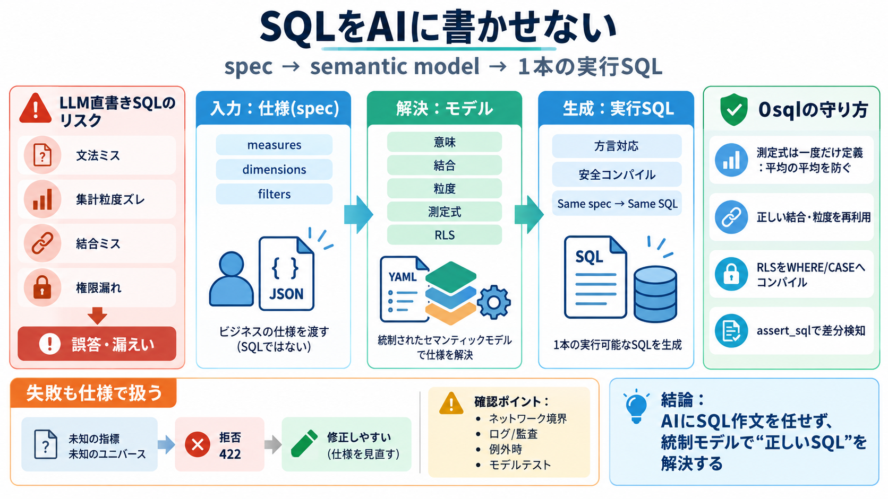

Best Semantic Layer Tools in 2026 (Compared)
Pricing: There is no standalone license. MetricFlow’s core is open source, and the managed Semantic Layer ships through …

0sqlは、利用者がSQLではなく“仕様(spec)”を送り、統制されたセマンティックモデルから最終SQLを解決する仕組みです。
（仕様→モデル解決→1本の実行SQL）
LLMにSQLを書かせると、文法ミス・誤った集計粒度・参照テーブルの取り違え・行レベル制御の漏れなどが起き得ます。
結果として、誤答や機密漏えいのリスクが上がります。
利用者（またはアプリ/AIエージェント）は、measures / dimensions / filters などのビジネス用語に沿った“仕様”を送ります。
0sqlは、その仕様をモデルに照らしてSQLへ解決します。
ユーザが指定したのは“言葉としての要件”であり、SQLの書き方はモデルが握ります。
だから、SQLは毎回AIが作文するのではなく、同じモデル則で生成されます。
0sqlの主張は、仕様の入力からモデル解決、そして実行SQLの生成・安全なコンパイルまでを段階化して行うことです。
分析ロジックのバグ（例：平均の平均）が問題になるのは、計算が都度“それっぽく”再実装されるからです。0sqlは測定値（例：Average Handle Timeなど）をモデルの式として固定します。
SQL直書きや自由な生成では、テーブルのつなぎ間違い（ファンアウト等）や集計粒度のズレが起きます。0sqlは、モデルで“正しい結合と粒度”を一度定義し、仕様から再利用します。
0sqlは、JWT等のコンテキスト（ユーザ/所属グループ）を受け取り、モデル側のポリシーをSQLのWHERE/CASEへコンパイルします。
同じspecでも権限に応じて取得行が変わる、と説明されています。
同じspecとモデルなら同じSQL（byte-for-byte）を目指し、デプロイ時にassert_sql等のテストで変化を検知して失敗させる方針です。
“サプライズ変更”を防ぐのが目的です。
仕様に必要なビジネス用語がモデルに存在しない場合、誤ったSQLへ進まず、422 Unprocessable Contentのようにエラークラスと理由を返すとされています。
次のターンで修正しやすい設計です。
この抜粋では「0sqlが倉庫へ接続しない」「データが外へ出ない」を強く主張しますが、実際の実行環境（ネットワーク境界・ログ・例外時）を確認する必要があります。
また、モデルテストの網羅性や移行戦略も深掘りが必要です。
0sql（/Strata）は、AIにSQL生成を委ねるリスクを下げるために、仕様(spec)と統制されたセマンティックモデルで“正しいSQL”を解決します。
その中心は①測定/粒度/結合の一度きり定義、②RLSのモデルコンパイル、③同spec同SQLの決定性とデプロイ時テストです。
次に確認したいこと：実行環境のネットワーク境界、ログ/監査、エラー時の挙動、モデルテストの粒度です。
Pricing: There is no standalone license. MetricFlow’s core is open source, and the managed Semantic Layer ships through …
Assuming any metric layer also handles serving. Defining a metric and serving it at scale are different problems. Servin…
Cube’s caching and query optimization approach deserves particular attention. The platform supports pre-aggregations—mat…
Each of those is foundational for putting AI agents into production. Adding them on top of MetricFlow is not a configura…
``` sql ``` GRANT SELECT ON METRIC VIEW main.sales.sales_metrics TO `marketing_team`; ``` ``` Users need `SELECT` on…